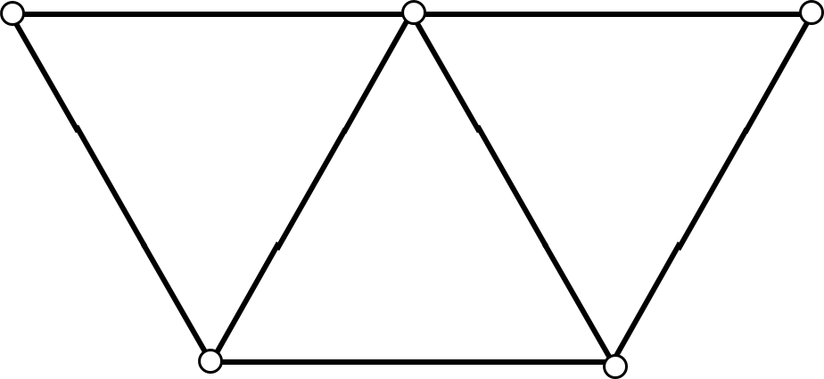

Subdivision Surfaces
\(\sqrt{3}\) Subdivision
Algorithm Overview
- 1-to-3 face split followed by an edge flip of the input edges
- After two subdivision we obtain a 1-to-9 split. Therefore the name \(\sqrt{3}\)
The Subdivision Algorithm
The 1-to- 3 face split works as follows


Smoothing of inner vertices is carried out as follows:


Boundary vertices are smoothed once after two subdivision steps:

old vertex (midpoint)